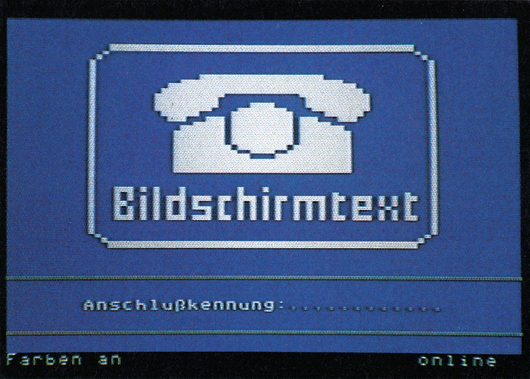
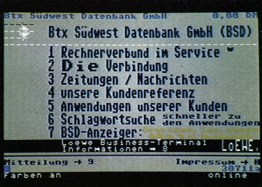
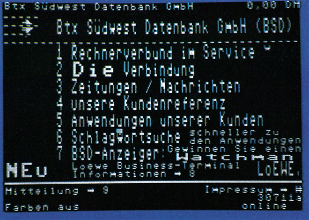
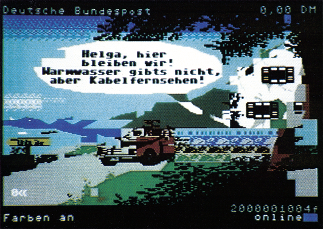

Die Billiglösung
Btx-Software-Decoder für den C 64 sind gegenüber Hardware-Decodern für wesentlich weniger Geld zu bekommen. Sind sie eine Alternative zu den noch recht teueren Hardware-Lösungen oder nur eine Spielerei?
Wir testen für Sie den Btx-Decoder von Stockem-Computertechnik. Liest man in den Inseraten den Preis von 198 Mark, wird man erst einmal mißtrauisch, denn der Commodore-Decoder soll rund 700 Mark kosten und günstige Beistell- und Einbaudecoder ab 550 bis 600 Mark. Irgend etwas kann da nicht so 100prozentig sein, denkt man. So ist es auch, denn der Stockem-Btx-Decoder hat keinen speziellen Chip, der Btx-Signale auswertet und in Videosignale umsetzt, so daß der C 64 nur noch als Tastatur gebraucht wird. Der Stockem-Decoder nutzt einfach nur die Möglichkeiten, die im C 64 selbst stecken. Und daraus ergeben sich die Einschränkungen.
Der Stockem-Btx-Decoder besteht aus einer Diskette, einer Anleitung und einem RS232-Modul, das einen Akustikkoppler mit 25poliger-D-Sub-Buchse mit dem Expansion-Port des C 64 verbindet. Auf der Diskette befindet sich ein Terminalprogramm, »Btx-Term«, das entweder als Btx-Programm oder als herkömmliches Terminalprogramm benutzt werden kann. Im Btx-Modus lassen sich Übertragungsgeschwindigkeiten von 1200/75 und 1200/1200 Bit/s einstellen. Im Terminalmodus können eingestellt werden: 75, 300, 1200, 1200/75, 2400, 4800, 9600 und 19200 Bit/s. Die letzten beiden Geschwindigkeiten sind vor allem für Computer-Computer-Kopplungen interessant. Wir haben die Stockem-Schnittstelle mit einem PC über ein Nullmodem verbunden; selbst bei 9600 Bit/s (mehr schaffte der PC nicht) klappte die Übertragung fehlerlos.
Für Btx-Betrieb ist auf jeden Fall, zusätzlich zum Decoder, ein Akustikkoppler oder Modem erforderlich, die auch 1200/75 Bit/s übertragen können, da Btx zur Zeit nur mit dieser Übertragungsgeschwindigkeit arbeitet. Zwei bekannte Koppler, die das können, sind der AK2000S und der Dataphon S21-23d.
Zusätzlich braucht man noch eine Anschlußkennung für Btx. Diese Kennung erhält man bei der Post für 8 Mark im Monat.
Hat man das RS232-Modul am Expansion-Port und am Akustikkoppler angeschlossen und das Programm geladen und gestartet, braucht man nur noch die 190 anzuwählen und den Telefonhörer in den Koppler zu drücken. Es erscheint die Aufforderung zur Eingabe der 12stelligen Anschlußkennung (Bild 1). Erst wenn man diese eingegeben hat, erscheint die eigentliche Btx-Einschaltseite, auf der die Teilnehmernummer und das Paßwort eingegeben werden muß. Bis jetzt ist die Bildschirmdarstellung durchaus noch mit der eines Hardware-Decoders vergleichbar. Aber die Einschaltseite ist eine einfach darzustellende Btx-Seite, die keine Sonderzeichen enthält oder Farbspielereien. Wie eine Seite aussieht, wenn zwei »ungünstige« Farben aufeinandertreffen, zeigt Bild 2: Die gelbe Schrift im unteren Drittel ist nicht zu erkennen. Schaltet man allerdings beim Software-Decoder die Farben nach dem Seitenaufbau aus, nimmt die Lesbarkeit deutlich zu (Bild 3). Bei vielen Seiten bedeutet das keinen Nachteil, denn in der Regel ist man ja an der Information interessiert und nicht daran, wie farbig eine Seite ist. Ebenso kann man leicht auf eine blinkende Darstellung verzichten.



Schwierigkeiten mit der eingeschränkten Darstellung bekommt man erst dann, wenn man eine Seite betrachten will, die mit DRCS-Zeichen arbeitet. Diese dynamisch definierbaren Sonderzeichen besitzen bei Btx eine Auflösung von 12 x 10 Punkten, von denen der C 64 nur 8x8 wiedergeben kann. Bei einfachen Grafiken reicht zwar die verringerte Auflösung des C 64 noch aus, eine Grafik erkennbar wiederzugeben, bei zunehmender Komplexität allerdings wird die Bildschirmdarstellung immer mehr zum »Chaos«. Bild 4 zeigt eine Seite der Post, dargestellt mit dem Stockem-Decoder, Bild 5 die gleiche Seite mit einem Fernseher mit Einbaudecoder.

Nebenbei erwähnt: Die Kabelwitze der Post sind sehr gute Testseiten zur Überpüfung der Funktionsfähigkeit eines Decoder. Trägt man sich mit der Absicht, einen neu auf den Markt gekommenen Decoder zu kaufen, sollte man zumindest diese Seiten einmal ausprobiert haben. Erreichbar sind die Kabelwitze über die Seite *20000#, Menüpunkt »Humor, Kabel-Urlaub«. Einige andere, kompliziert darzustellende Seiten finden sich unter dem Menüpunkt »Post im Bild, Elektronische Entdeckungsreise.«
Während des Tests haben wir auch festgestellt, daß beim Seitenwechsel ab und zu die Farben nicht geändert werden. So war einmal das Posthorn auf Seite *20000# auf gelbem Grund (normal) und einmal auf orangem Grund. Bei Ausloggen aus Btx mit *9# zeigte sich das Abschaltbild auch mal in gelber Farbe auf blauem Grund statt in Weiß auf Blau. Obwohl nur Kleinigkeiten, sollten diese Mängel durch Überarbeiten des Decoder-Programms beseitigt werden.
Bestimmte Hilfsfunktionen sollen den Umgang mit Btx erleichtern, so können Seiten gespeichert und später wieder geladen werden. Die Funktionstasten lassen sich mit Kommandos belegen, die häufiger gebraucht werden. Gespeicherte Btx-Seiten können auch ausgedruckt werden.
Für wen lohnt sich dieses Btx-Modul? Betrachtet man den Preis von 198 Mark, erscheint es auf den ersten Blick recht preisgünstig im Vergleich zu anderen Decodern. Aber man muß berücksichtigen, daß man noch einen nicht gerade billigen 1200/75-bit/s-Akustikkoppler dazu benötigt, der erst ab 300 Mark aufwärts zu haben ist. Das Paket Btx-Term mit Dataphon S21-23d kostet bei Stockem 498 Mark. Dieser Preis kommt schon sehr nahe an den Preis eines Beistell- oder Einbaudecoders heran, der an ein Postmodem angeschlossen wird, das ebenfalls 8 Mark pro Monat kostet. Besitzt man allerdings schon einen 1200/75-Koppler, oder will sich einen zulegen, um schnell über Datex-P zu kommunizieren und nebenbei sich etwas mit Btx zu beschäftigen, dann ist das Stockem-Modul eine Alternative, da man gleichzeitig mit dem Btx-Term ein Terminalprogramm geliefert bekommt, das mit 1200/1200 und 1200/75 bit/s arbeitet.
(Udo Dreier/hm)Bezugsquelle: Stockem Computertechnik, Lange Wende 33, 4770 Soest, 02921/73078